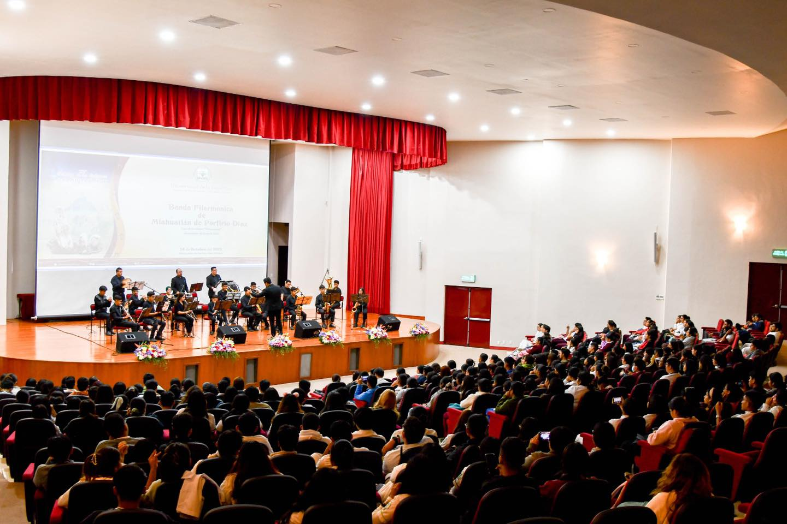

La Banda Sinfónica Universitaria celebra su 20° aniversario con un concierto especial
La Banda Sinfónica de la Universidad celebró este martes su 20° aniversario con un concierto conmemorativo realizado en el Auditorio Principal, evento que reunió a más de 900 estudiantes, profesores y exintegrantes de la agrupación.
El concierto, titulado “Dos décadas de música y formación artística”, incluyó interpretaciones de música clásica, piezas contemporáneas y arreglos sinfónicos de temas populares. Entre los momentos más destacados estuvo la ejecución de Danzón No. 2 de Arturo Márquez, que recibió una ovación de pie por parte del público.
El director de la banda, Maestro Rodrigo Salgado, mencionó que la agrupación ha sido un espacio de crecimiento
para cientos de jóvenes:
“La Banda Sinfónica no solo desarrolla talento musical, también enseña disciplina, trabajo en equipo y
liderazgo. Ver el crecimiento de nuestros estudiantes es lo que nos impulsa a seguir”.
Durante la ceremonia también se reconoció a los fundadores del proyecto, quienes recordaron que hace dos décadas la banda inició con solo 14 integrantes y ahora cuenta con más de 60 músicos activos distribuidos en secciones de viento madera, viento metal, percusiones y ensamble complementario.
Como parte de la celebración, la universidad anunció la creación del Programa de Becas Musicales 2026, que permitirá apoyar económicamente a estudiantes con talento artístico que deseen integrarse a la banda.
El evento concluyó con la presentación sorpresa de un medley de música mexicana, que puso de pie a toda la audiencia y cerró una noche llena de nostalgia, celebración y orgullo universitario.